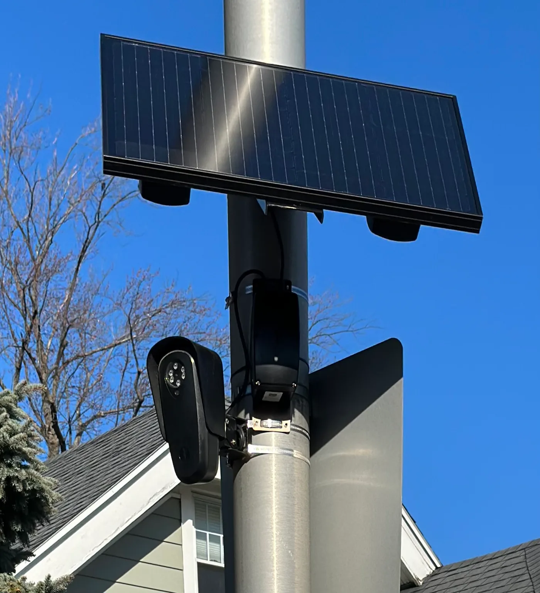
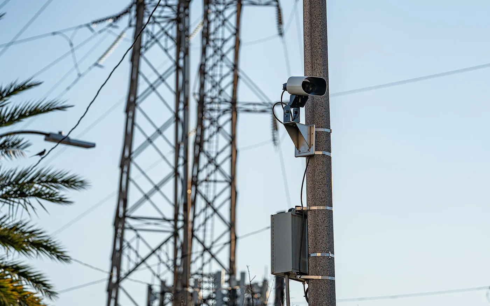

▲ 노스캐롤라이나가 주 관리 도로 전역에 자동 번호판 인식기를 상시 설치할 수 있도록 허용했다
법안 이름으로 통과된 것이 아닙니다. 주 예산안 안에 조항 하나가 들어갔습니다.
내용은 이렇습니다. 자동 번호판 인식기(ALPR)를 주가 관리하는 도로와 부지에 상시 설치할 수 있다.
노스캐롤라이나가 관리하는 도로는 주 전체 도로 연장의 약 80%입니다. 사실상 전 도로가 열린 셈입니다.
1. ALPR는 무엇을 하는 장치인가
ALPR(Automated License Plate Reader)는 지나가는 차량의 번호판을 카메라로 찍어 문자로 변환해 저장하는 장치입니다.
기록되는 것은 번호판만이 아닙니다.
- 번호판 문자
- 촬영 시각
- 촬영 위치
- 차량 이미지 — 색상, 차종, 스티커나 적재물 같은 특징
한 지점의 기록만 보면 별것 아닙니다. "어느 차가 몇 시에 여기를 지났다"는 정보입니다.
문제는 지점이 늘어날 때입니다. 여러 지점의 기록을 시간순으로 이으면 이동 경로 전체가 재구성됩니다. 누가 어디에 자주 가는지, 누구의 차와 같은 장소에 있었는지까지 추적할 수 있습니다.
영장 없이도 접근이 가능하다는 점이 논쟁의 핵심입니다. 공개된 도로에서 촬영된 정보라는 논리와, 지속적 추적은 성격이 다르다는 반론이 부딪힙니다.

▲ 번호판 문자만이 아니라 촬영 시각·위치·차량 이미지가 함께 기록된다
2. 카메라 3대가 1,480만 대를 읽었다
규모를 실감하려면 시범 사업 숫자를 봐야 합니다.
| 항목 | 수치 |
|---|---|
| 설치 지점 | 140곳 |
| 판독 건수 | 약 8개월간 1억 5,200만 건 이상 |
| 롤리시 카메라 | 3대 |
| 롤리시 스캔량 | 약 1,480만 대 |
롤리시 사례가 특히 인상적입니다. 카메라 세 대가 약 1,480만 대의 통행을 읽었습니다.
이것이 시범 사업 단계의 숫자입니다. 주 관리 도로의 80%로 확대되면 규모는 전혀 다른 차원이 됩니다.
데이터 보관 기간은 기본 90일입니다. 다만 선서에 기반한 보존 요청이 있으면 특정 번호판·카메라·기간에 대해 최대 1년까지 연장됩니다.
접근 권한은 주 수사국(SBI)이 갖고, SBI가 연방·주·지방 법집행기관을 대신해 조회할 수 있습니다.

▲ 태양광 전원으로 별도 전기 공사 없이 설치할 수 있어 확산 속도가 빠르다
3. "원래 목적에 머무는 경우는 드물다"
ACLU 활동가 잭 콘트레라스는 이렇게 지적했습니다.
"대량 감시 시스템이 원래의 목적에만 머무는 경우는 드물다."
그가 우려한 확장 방향은 구체적입니다.
- 이민 단속
- 낙태 관련 수사
- 정치적 감시
이 우려가 추상적이지 않은 이유는 시스템의 성격에 있습니다. ALPR은 범죄 용의 차량만 골라 찍지 않습니다. 지나가는 모든 차량을 기록하고, 그 뒤에 검색합니다.
즉 데이터베이스는 이미 만들어져 있고, 무엇을 위해 검색할지는 나중에 정해집니다. 도입 시점의 목적(도난 차량 추적, 강력범죄 수사)과 실제 사용 범위가 벌어질 여지가 구조적으로 존재합니다.
또 하나 지적되는 부분은 통과 방식입니다. 별도 법안으로 공개 토론을 거친 것이 아니라 예산안에 조항으로 포함돼 처리됐습니다.
4. 국내 상황과 무엇이 다른가
국내에도 번호판을 읽는 카메라는 많습니다. 다만 성격이 다릅니다.
| 구분 | 국내 단속 카메라 | ALPR |
|---|---|---|
| 목적 | 속도·신호 위반 적발 | 통행 기록 축적 |
| 기록 대상 | 주로 위반 차량 | 지나가는 모든 차량 |
| 활용 | 과태료 부과 | 이동 경로 검색 |
다만 국내에도 통행 기록이 축적되는 경로가 있습니다.
- 하이패스 — 통과 시각과 영업소가 기록된다
- 주차장 입출차 시스템 — 민간 사업자가 번호판을 인식해 저장한다
- 방범용 CCTV — 지자체가 운영하며 차량 영상이 포함된다
차이는 통합 여부입니다. 국내는 이 기록들이 서로 다른 주체에 흩어져 있고, 통합 조회 체계가 별도로 구축돼 있지 않습니다. 노스캐롤라이나 사례는 단일 기관이 통합 검색 권한을 갖는 구조입니다.
개인정보 측면에서 확인해둘 것도 있습니다. 국내에서는 번호판 조회 서비스를 표방하는 사이트가 있는데, 개인이 타인의 차량 정보를 조회하는 것은 제한된 절차 안에서만 가능합니다.

▲ ALPR은 위반 차량이 아니라 지나가는 모든 차량을 기록하고, 검색은 나중에 이뤄진다
5. 정리
미국 노스캐롤라이나가 주 관리 도로와 부지에 자동 번호판 인식기(ALPR)를 상시 설치할 수 있도록 허용했습니다. 별도 법안이 아니라 주 예산안에 포함된 조항으로 처리됐습니다.
주가 관리하는 도로는 전체 연장의 약 80%입니다. 데이터는 기본 90일 보관되며, 선서 기반 보존 요청 시 최대 1년까지 연장됩니다. 조회는 주 수사국(SBI)이 담당합니다.
시범 사업만으로 140곳에서 약 8개월간 1억 5,200만 건 이상이 판독됐고, 롤리시 카메라 3대가 약 1,480만 대를 스캔했습니다. ACLU는 "대량 감시 시스템이 원래 목적에만 머무는 경우는 드물다"고 지적했습니다.